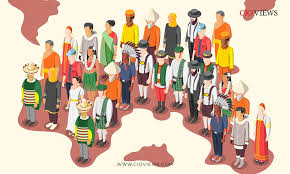

Exploring the Beauty of Nature

The sun, with all those planets revolving around it and dependent on it, can still ripen a bunch of grapes as if it had nothing else in the universe to do. Nature is the connection between the physical world surrounding us and the life inside us.
The Future of Technology: A Glimpse into Tomorrow's World
The future of technology holds immense promise and potential. From quantum computing to space exploration, the innovations on the horizon are set to reshape our world in unimaginable ways. The possibilities are endless, and the journey has only just begun.
Butterfly Quotes
“Love is like a butterfly: It goes where it pleases, and it pleases wherever it goes”. A butterfly is an insect with stunningly attractive and captivating wings. In the wings, we can see a variety of colours and patterns.
Cultural Values Are What Make Diverse Cultures Unique

Multiple cultures are residing on the earth side by side. These cultures are very distinct from each other so are their cultural values. And these differences are making our world full of diversity.
BTS Inspirational Quotes
"Happiness is not something that you have to achieve. You can still feel happy during the process of achieving something. So if you change your perspective a bit, I know many of you are going through tough times right now, but this could be the most beautiful moment of our lives.”